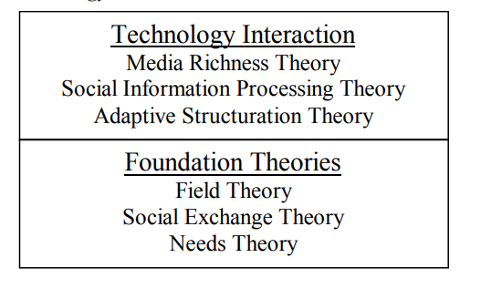

This chapter explores the concern for social needs in distance education. As a foundation, the chapter discusses the evolving learning environment and stakeholder expectations that distance education must address as it grows in prevalence. In addition, technology is a key enabler of any distance learning program. This chapter analyzes several theories that integrate learning and technology for potential insights applicable to distance learning. These insights lead to an exploratory study to compare the “need for affiliation” between students working in groups for distance classes (virtual groups) and students working in groups for on-campus classes (actual groups). The preliminary results of the study indicate that some issues concerning socialization do exist between the two groups. Ultimately, the study points to the need for more formal and definitive measures of the social aspects of group work in distance education.
Distance education is struggling to identify what it should be. Clearly, there are many stakeholders vested in the results of the ultimate definition. State organizations want to efficiently use taxpayer dollars for education...
instructors want to efficiently present course topics for effective learning; students want to optimize their learning process to maximize their careers. It is safe to say that, ultimately, all parties want the best outcome; the biggest problem is that no one is sure of all the parts that need to be considered. For the purpose of this discussion, distance education is defined as creating a learning environment that facilitates structured learning without the traditional practice of face-to-face interaction in an on-campus environment. This means that the practice of rural teachers who traveled between settlements to educate students in their homes meets the spirit of the definition. However, in today’s world, distance education usually implies some sort of technological support through the Internet, email or videoconferencing. As distance education becomes more viable for undergraduate education, the education industry should understandinto what learning environment it is trying to assimilate. The practice of traditional education is changing quickly also. One pedagogical model receiving significant attention is called Learning Centered Education (LCE). This concept “places learning and learners at the core of the educational process” (Bilimoria & Wheeler, 1995). Essentially, a learning partnership is created whereby the teacher identifies what needs to be learned and the students help identify the means by which their own learning occurs. The concept works because it realizes that there are obligations on both sides of this partnership; the teacher facilitates and the student participates. In summary, distance education is not a new concept. However, the unprecedented growth in technology and pedagogical changes in education power its growth. Internet, email, videoconferencing, etc., are enabling distance education to take a firm hold technically. The evolving model of Learning Centered Education provides one pedagogical perspective from which to view distance education.
One of the fundamental concerns remaining in learning is when it is that learning actually occurs. John Locke (Chaplin & Krawiec, 1960) believed that humans start with a blank slate – tabula rasa – and that we, as human beings write our experiences on that slate throughout life. These experiences are what we have learned. Early researchers in the field of psychology picked up on this notion and tried to measure learning quantitatively: How much was being added to the tabula rasa. Ebbinhaus (1913) conducted several experiments from which he derived a famous retention curve to show how well individuals learned nonsense syllables over time. Gulliksen (1934) and Hull...
(1943) created formulas to measure learning by differences in what has been attained (learned) and what is left to attain (learn). Carr (1931) took a less quantitative approach and organized learning into several classes of general laws. One such class was that learning is an adaptive activity and individuals learn by going through a series of activities and noting the responses from their environment. These activities and corresponding responses become learned as they are retained over time, in memory.
More recently, researchers (Papert, 1980; Bandura, 1977; Hills & Francis, 1999) argue that “real learning” requires a social context. Seymour Papert (1980) makes his case in his book, Mindstorms, as he relates teaching computer programming logic to children. Social Learning Theory (Bandura, 1977) emphasizes the interaction of people both with other people and with the environment. The level of social presence, the perceived “consciousness of another person in an interaction,” (Tu, 2000) is described as the main driver in learning. Hill and Francis (1999) conducted their research with respect to computer-based training (CBT). Somewhat paradoxically, their findings showed that CBT environments were more successful when they included more social context.
Much like CBT, which is generally “a solitary experience which takes place away from the real job,” the distance environment will be required to take into account the social aspects of learning. Hogan and Kwiatkowski (1998) report on the social aspects of teaching in large groups in the United Kingdom. Their argument includes the premise that technology can handle the activity of teaching to large groups, but that the emotional aspects of this teaching method have been ignored. Similar concerns are raised in Australia, where technology has been supporting distance teaching for many years. Hearn and Scott (1998) argue that before adopting technology for distance teaching, technology must acknowledge the social context of learning.
The issues around implementing distance education are not just conceptual. There are stakeholders with very pragmatic needs. The students want to obtain skills for better jobs, and employers want to obtain graduates with better skills. Can distance education serve these needs? In a research study comparing recruiter and student perceptions of key skills necessary for employment and career advancement, several of the top skills required social interaction (Martz & Landof, 2000). Teamwork, project management and leadership skills ranked in the top five characteristics desired by recruiters. The fact that these skills require significant interaction with others to be successful means that they are “socially driven.” If true, this means that learning development may suffer in the distance education environment.
One such problem is environment-driven. Haythornthwaite et al., (2000) coin a term, “fade back,” to describe students who do not participate in the distance class. They point out that the “fading back” is accomplished easier in distance learning environments where the number of social cues is reduced. These cues include text without voice, voice without body language, class attendance without seating arrangements, and students signing in without attending (Haythornthwaite et al., 2000). This implies that in similar classes, with similar levels of student interests, the likelihood of students “fading back” is greater in distance learning classes than in face-to-face classes.
Real learning seems to have a significant social component. As distance education evolves, it must be able to recognize and incorporate this component. There are stakeholders with pragmatic requirements that must be addressed. Employers want employees with both technical skills and skills that are “socially driven.” Finally, into this mix an appropriate level of technology is added with the desire to remove the student from the physical confines of the classroom. This leads one to consider how technology and people interact.
As one thinks about distance education, it must be acknowledged that distance education incorporates many factors such as how individuals are motivated to learn and how individuals interact with technology. Looking at theories from each of these areas can help guide our investigation. First, there are a set of theories that have developed around the individuals and how individuals learn. These are labeled foundation theories because motivation to learn must exist before distance learning can be effective. Second, as technology has become more and more necessary to enable distance education, theories have been developed about how individuals and groups interact with technology. These theories are classified as technology interaction theories because they predict how individuals and groups interact with technology. These theories grow from the technology-oriented areas such as group support systems and collaborative work. Here researchers have been studying how people interact productively with technology. Commonalities across these foundation theories and technology interaction theories can help understand some of the issues faced by distance education.
Foundation theories, such as Field Theory, Social Exchange Theory, and Needs Theory, try to explain the various behaviors exhibited by individuals.
In groups, Briefly, Field Theory (Lewin, 1951) looks at the group dynamics caused by how individuals behave to overcome barriers as they try to achieve a goal. Lewin relates learning to this motivation (Chaplin & Krawiec, 1960). In groups, the large number of possible interactions complicates this behavior. Social Exchange Theory describes behavior in terms of its rewards and costs. “Rewards are pleasurable outcomes associated with particular behaviors; costs include such things as mental effort, anxiety or even embarrassment (Beebe & Masterson, 1986). Viewed in this economic way, individuals will seek to establish relationships that accrue a net positive analysis. In addition, individuals will enact behaviors to continue those relationships with a positive value.
Table 1: Technology Interaction and Foundation Theories In 1943, Abraham Maslow presented a first, rough draft of his Need Hierarchy Theory. Subsequently, he and his fellow researchers tested and adapted the theory for organizational settings. Essentially, the theory proposes that human beings have a set of “staircased” needs that interact and “combine with [other] biological, cultural and situational factors to determine behavior” (Miner, 1980). Of interest to us in this discussion is the need in which Maslow includes the desire for a sense of affiliation and general belongingness – broadly termed the “love needs” (Miner, 1980). Along these same lines, Aldefer (1972) included these needs in his “three-staired” Existence-Relatedness-Growth (ERG) Theory as relatedness needs. Both theories propose that when these needs are not satisfied (and the needs below this level are), the behavior of an individual will try to satisfy these needs. For example, until the lower-level “security needs” are satisfied for an individual, that individual will act to satisfy these lower-level needs before acting to satisfy needs on a “higher” stair. The research results showed much more complexity than just discussed, but, in general, the conjectures from the theories have held.
One of the more practical areas that use this need hierarchy model is the job enrichment program. The “need for affiliation” has been found to be a key ingredient in helping with achievement motivation (McClelland, 1961; Shipley & Veroff, 1952) and has been related to job satisfaction (Miner, 1980). Complementing this idea is that of a reference group whereby individuals “express” their “need for affiliation.” Kelley (1951) identifies two such groups: comparative group, in which the individual compares and contrasts his or her stature — peer group — and reference group, to which the individual identifies with the general feelings. Students comparing their SAT test scores to others in the class represents a comparative group, while promoting the Sierra Club with a bumper sticker would constitute a reference group.
One of the key areas that deals with technology and its impact on manual human-based processes is in the realm of group support systems (GSSs). Group Support Systems add a technology component to how groups work together (DeSanctis & Gallupe, 1985), much like distance education is adding a technology component to learning. GSS research has been a major contributor to the body of knowledge concerning group interactions and learning. In GSSs, manual methods for meetings and group work (Delbecq & Van de Ven, 1971; Linstone & Turoff, 1975; Saaty, 1980; Osborn, 1953) have been automated and the interaction of technology with people studied (Briggs et al., 1998; Fjermestad & Hiltz, 1999). As the researchers studied the impact of automating these processes, theories evolved. Essentially, face-to-face meeting environments are said to have many media to communicate information; these include verbal (e.g., tone of voice, volume) and nonverbal (e.g., body language, facial expressions). As technology is added to the process, it produces a lens that impacts the media by either a) restricting the flow of information, or b) missing some of the information completely. Tu (2000) refers to this as the “technological social presence.” Figure 1 provides a simple diagram for further discussion.
Social Information Processing Theory (SIP) (Chidambaram, 1996; Walther, 1992) and Adaptive Structuration Theory (AST) (Poole & DeSanctis, 1990), suggest that the technology – the lens – is a limiting factor or constraint for communication. Each theory, in its own way, discusses how the senders of the cues adapt to the lens. SIP suggests that, over time, the sender will be able to get all the cues through; it simply takes more time. The senders choose to use their limited channel to process the task-oriented communications first, and then, if time permits, the theory predicts that the more social communications would follow.
AST proposes a different tactic with the same end; that the senders figure out alternative ways to send the cues based upon what is “allowed” through the lens. The term used for this action is “appropriation” and “refers to the manner in which structures are adapted by a group for its own use…” (Gopal et al., 1993). A good example here is how a sender of email may use emoticons (e.g., :) – sarcastic smile, ;) – wink, :o – exclamation of surprise) to communicate more emotion about the subject to the receiver. These theories, SIP and AST, tend to predict that the channel works over a period of time.
Media Richness Theory (Daft & Lengel, 1986) suggests that the inherent characteristics of the technology filter out cues and ultimately these cues do not make it through the lens to provide information to the receiver; in the case of group support systems, to the group process. The richness of the media—the size of the lens—directly impacts the effectiveness of the technology in the situation. The capacity of the channel to provide communication defines the richness of the channel. A face-to-face meeting offers a “richer media” than does a posted letter. Social Presence Theory (Short et al., 1976) argues that since the lens limits the amount of cues that may make it through, most cues will be action or task-oriented. In other words, the lens hampers the cues that provide for the receivers to “observe” any social cues. This means that the ability to observe or understand the other person in the communication is minimized.
Leidner and Jarvenpaa (1995) identify several learning models and propose how the current practices of using information technology work with each. One of the drivers for their work is a concern that information technology may be speeding up ineffective methods of teaching. In their analysis, they create a matrix showing the different technologies being used and to which learning model each technology fits best. For Leidner and Jarvenpaa (1995), distance learning fit best with the “Objectivist” learning model. They defined this model with the basic premise of “learning is the
"Uncritical absorption of objective knowledge," and the goals of "transfer of knowledge" and "recall of knowledge." The model that has the goal of "promoting socialization," including "group skills [such as] communication, listening, and participation" is termed "Collaborativism." The best technology fit for this learning model was "asynchronous communication across distances" such as email or asynchronous groupware. In essence, they are proposing that different modes of information technology represent different lenses.
The debate still rages as to the effectiveness of distance education. The complex environment contains issues around how students learn, what motivates students to learn, how to make the learning environment better, how to make the environment worthwhile for all the stakeholders and how technology impacts the learning environment. Several researchers and educators are studying how distance education classes create a sense of community (Haythornthwaite et al., 2000; Dede, 1996). The study of these complex issues and interactions falls into the broad field of Social Informatics (Kling, 2000), which is defined as the study of the interaction of information technologies with an institutional and cultural perspective.
Studies are forthcoming. A review of over 400 studies compared distance to traditional classroom instruction with complex and conflicting results (Russell, 2001). On the positive side, faculty at eCollege.com reported that their students learned equally effectively online as they did on campus (TeleEducation NB, 2001). GSS studies are identifying and reconfirming the important characteristics in developing a sense of community, such as satisfaction (Chidambaram & Bostrom, 1997); trust (Aranda et al., 1998); cohesiveness (Chidambaram, 1996); and participation (Nunamaker et al., 1991). However, distance learning environments may be creating some additional concerns such as higher rates of student anxiety and frustration (Hora & Kling, forthcoming) and these environments may inherit the GSS characteristic of less consensus in decision making (Daft & Lengel, 1986; Briggs et al., 1998).
From these perspectives, distance learning must address both the technical content and the social aspects of the individuals. Even if the class is started and taught as an "objectivist" view, students will ultimately include the social aspects of the "collaborativism" view. This seems to be the case in a study wherein distance students performed better than their on-campus counterparts (Black, 1997). The researcher conducting the study attributed the findings to the online students compensating for not having time in class to talk.
Going even further, one can view the "need for affiliation" as a social need that helps with learning. This proposal is best aligned with the Social Information Processing Theory where Chidambaram (1996) describes one underlying premise of the theory this way: "Implicit in the SIP perspective is the idea that users of computer media are driven by these needs [affiliation motive – the need to like and to be liked by others] just as much as those in non-computer settings."
With Figure 1 in mind again, one would assume that the group process created by the technology lens in a distance class would be less "media rich" than that created by the traditional classroom. In addition, the "need for affiliation" between the individuals in two classes should be the same. Combining these two assumptions, one would expect to see more behavior geared to creating or attaining social cues in the distance learning class than in the face-to-face class.
This chapter describes one study performed to look at the above issue in more detail. The study used an MBA-level, introductory Information Systems course to compare traditional on-campus students with students taking the same class in a distance learning environment. The initial hypotheses centered on the need for affiliation; the prediction was that students in distance classes (DIST) would show more "need for affiliation" than students in on-campus classes (ONC). The following outcomes were expected:
A questionnaire with 42 items was given to both groups. The questions asked about demographics, perception of technology and perception of group work. Short answer and seven-point Likert questions were used (1 = Strongly Agree ... 7 = Strongly Disagree). An example of the questionnaire is provided in Appendix A. The questionnaire was provided to both MBA classes. As previously mentioned one class was conducted totally by distance (DIST) while, the other was on-campus (ONC). A total of 42 students responded: 25 from the on-campus class and 17 from the distance class.
The analysis of the data is exploratory in nature and as such is subject to several limitations. First, the questionnaire was developed to measure a broad set of characteristics that interact in many ways. A factor analysis will help decompose these characteristics for revising the questionnaire. Second,the
two classes were separated in time; they were taught in subsequent semesters and while the learning goals were the same, the exposure to topics varied. Finally, the low number of responses demands a more conservative statistical analysis that may not find subtle differences. The items with statistically significant results are provided in Table 2 below.
As discussed, the results of the prior research in this area are mixed. H1 and H2 were not supported, and H3 was only partially supported. The ONC group reported meeting more times per week than the DIST group (Q12), and more of the ONC time in meetings was spent on socialization than task (Q13). This is contrary to the expectations in terms of the need for affiliation.
However, the DIST group reported spending more time in meetings (Q11) and a greater percentage of that time on task than ONC group (Q14). So while DIST group held fewer meetings than the ONC group, they spent more time in each meeting than the ONC group. In addition, they spent more time on task than the ONC group. It is interesting to note that the DIST groups strongly disagreed that there was too much socialization in the group (Q24).
It was anticipated that the technology would play a part in how much time was spent in meetings and how much of the meeting time was spent on socialization (Figure 1). It is possible that the technology was inhibiting the number of meetings for the DIST group. The DIST group reported using
Table 2: Distance vs. on-campus characteristicsEmail, phones, and an asynchronous forum for communication. These technologies are not very rich in nature. So it may not be so surprising that the DIST group met less often (“..we’ve got the technology working, let’s keep going while we can…”) and had less socializing (“…who knows how much longer the technology will last – better not waste time socializing…”). The DIST group may have used email (at other times) to do their socializing. Examples of this might be sending short emails inquiring about weather or sporting events, inquiring about personal issues, or exchanging jokes. The DIST group may not have considered these emails to be part of a meeting. This scenario is diagrammed below (Figure 2).
The DIST students may have satisfied the need to socialize in other ways, and therefore did not need to do so while in their meetings. This would make sense if the technology they were using for their meetings was not very rich. Very few satisfaction characteristics were significant. The ONC group disagreed more strongly that it was disappointed with how the course worked out (4.61 for DIST vs. 5.44 for ONC (Q29). At the same time, the DIST students (3.66 for DISTvs. 2.50 for ONC) did not agree as strongly as the ONC students that everyone in the group did their fair share (Q31). With regard to the technology measures, there was no significant difference between the two groups; however, the DIST students did feel that the technology helped them get their work done (2.11). It should be noted that the questionnaire did not explicitly ask them if the technology helped them socialize, or if it inhibited their efforts to socialize.
Figure 2: Social-Task activity overlap
In summary, as technology moves quickly to enable distance education and learning environments, one concern that has to be dealt with is how students best interact with the technology. In understanding this, one must first understand the process of learning and then the process by which people interact with technology. This paper has provided a brief review of some of the theories in these areas. Socialization and its impact on learning were prevalent themes throughout the reviews. This ultimately led to the proposal to study differences in socialization between an on-campus and distance education class.
The amount of socialization between distance and on-campus respondents showed significance in two areas. First, the on-campus respondents reported more socialization in their group meetings than did the distance education respondents. Second, the distance education respondents strongly disagreed that there was too much socialization, indicating a willingness for more socialization. While both groups were on the ‘agree’ side of the scale when asked if everyone in their group contributed equally, it needs to be noted that the DIST group agreed significantly less. However, more direct measures for differences in participation did not prove significant.
This study provides the basis for future research in several ways. First, there is some support from this preliminary data that socialization differences do exist between students in on-campus and distance education classes. Second, based on this research, the questionnaire can be refined so that it can better detect the differences. A factor analysis of this questionnaire identifies six factors within the data. In four of these factors, one of the statistically significant characteristics identified in this study provides the anchor. Finally, the identification and corresponding understanding of the socialization needs associated with learning will help distance education better achieve its goal of providing a better learning environment.
Alderfer, C. P. (1972). Existence, Relatedness and Growth: Human Needs in Organizational Settings. New York: Free Press.
Aranda, E. K., Aranda L.H. and Conlon, K. (1998). Teams: Structure, process, culture and politics, Englewood Cliffs, NJ: Prentice-Hall.
Bandura, A. (1977). Social Learning Theory. Englewood Cliffs, NJ: Prentice-Hall.
Beebe, S. A. and Masterson, J. T. (1986). Communicating in Small Groups: Principals and Practices, 2nd ed. Glenview, Illinois: Scott, Foresman and Company.
Bilimoria, D. and Wheeler, J. V. (1995). Learning-centered education: A guide to resources and implementation. Journal of Management Education, 19(3), 326-341.
Black, J. (1997). Available on the World Wide Web at: http://www.news.com/News/Item/0,4,7147,00.html. Accessed January 12, 2000.
Briggs, R.O., Nunamaker, J. F., Jr. and Sprague, R. H., Jr. (1998). 1001 unanswered research questions in GSS. Journal of Management Information Systems, Winter, 14(3), 3-21.
Carr, H. A. (1931). The laws of association. Psychological Review, 38, 212-228.
Chaplin. J. P. and T. S. Krawiec. (1960). Systems and Theories in Psychology. New York: Holt, Rinehart and Winston.
Chidambaram, L. (1996). Relational development in computer-supported groups. MIS Quarterly, June.
Daft, R. L. and R. H. Lengel. (1986). Organizational information requirements, media richness and structural design. Management Science, May, 32(5), 554-571.
Dede, C. (1996). The evolution of distance education: Emerging technologies and distributed learning. American Journal of Distance Education, 10(2), 4-36.
DelBecq, A. L. and Van de Ven, A. (1971). A group process model for problem identification and program planning. The Journal of Applied Behavioral Science, 7(4), 466-492.
DeSanctis, G. and Gallupe, B. (1985). Group decision support systems: A new frontier. Data Base, Winter, 16(1), 3-10.
Ebbinhaus, H. (1913). Memory, A Contribution to Experimental Psychology, Translated by Ruger and Bussenius.
Fjermestad, J. and Hiltz, S. R. (1999). An assessment of group support systems experimental research: Methodology and results. Journal of Management Information Systems, Winter, 15(3), 7-149.
Gobal, A.G., Bostrom, R. B. and Chin, W. (1993). Applying adaptive structuration theory to investigate the process of group support Systems. Journal of Management Information Systems, Winter, 9(3), 45-69.
Gulliksen, H. (1934). A rational equation of the learning curve based upon Thorndike’s law of effect. Journal of General Psychology, 11, 395-434.
Haythornthwaite, C., Kazmer, M. M., Robins, J. and Showmaker, S. (2000). Community development among distance learners. Journal of Computer-Mediated Communication, September, 6(1).
Hearn, G. and Scott, D. (1998). Students staying home. Futures, September, 30(7), 731-737.
Hills, H. and Francis, P. (1999). Interaction learning. People Management, 5(14), 48-49.
Hogan, D. and Kwiatkowksi, R. (1998). Emotional aspects of large group teaching. Human Relations, November, 51(11), 1403-1417.
Hora, N. and Kling, R. (At Press, 2001). Information, Communications and Society. Available on the World Wide Web at: http://www.slis.indiana.edu/CSI/wp00-01.html. Accessed January 12, 2001.
Hull, C. (1943). Principles of Behavior. New York: Appleton-Century-Crofts.
Kelley, H. H. (1951). Communication in experimentally created hierarchies. Human Relations, 4, 39-56.
Kling, R. (2000). Learning about information technologies and social change: The contribution of social informatics. Information Society, 16(3), 217-232.
Leidner, D. E. and Jarvenpaa, S. L. (1995). The use of information technology to enhance management school education: A theoretical view. MIS Quarterly, September, 265-291.
Lewin, K. (1951). Field Theory in Social Science: Selected Theoretical Papers. Cartwright, D. (Ed.), New York: Harper and Row.
Linstone, H. A. and Turoff, M. (1975). The Delphi Method: Techniques and Applications. Reading, MA: Addison-Wesley.
Martz, Jr., W. B. and Landof, G. (2000). Information systems careers: A comparison of expectations. Journal of Computer Information Systems, Winter, 40(2), 41-46.
McClelland, D. (1961). The Achieving Society. New York: Van Nostrand Reinhold.
Miner, J. B. (1980). Theories of Organizational Behavior. Hinsdale, IL: Dryden Press, 18.
Nunamaker, Jr., J. F., Dennis, A. R., Valacich, J. S., Vogel, D. R. and George, J. F. (1991). Electronic meeting systems to support group work. Communications of the ACM, 34, 42-58.
Osborn, A. F. (1953). Applied Imagination. New York: Charles Scribner’s and Sons.
Papert, S. (1980). Mindstorms. New York: Basic Books.
Poole, M. S. and DeSanctis, G. (1990). Understanding the use of group decision support systems: The theory of adaptive structuration. In Fulk, J. and Steinfeld, C. (Eds.), Organizations and Communication Technology. New Bury Park, CA: Sage Publications, 173-193.
Russell, T. (2001). Available on the World Wide Web at: http://nova.teleeducation.nb.ca/nosignificantdifference/. Accessed January 12, 2001.
Saaty, T. L. (1980). The Analytical Hierarchy Approach. New York: McGraw-Hill.
Short, J., Williams, E. and Christie, B. (1976). The Social Psychology of Telecommunications. New York: John Wiley.
Shipley, T. E. and Veroff, J. (1952). A projective measure of need affiliation. Journal of Experimental Psychology, 43, 349-356.
TeleEducation, NB. (2001). Available on the World Wide Web at: http://teleeducation.nb.ca/anygood/. Accessed January 12, 2001.
Tu, C-H. (2000). Online learning migration: From social learning theory to social presence theory in the CMC environment. Journal of Network and Computer Applications, 23, 27-37.
Walther, J.B. (1992). “Interpersonal Effects in Computer-Mediated Interaction: A Relational Perspective,” Communications Research, February, 19(1), 52-90.